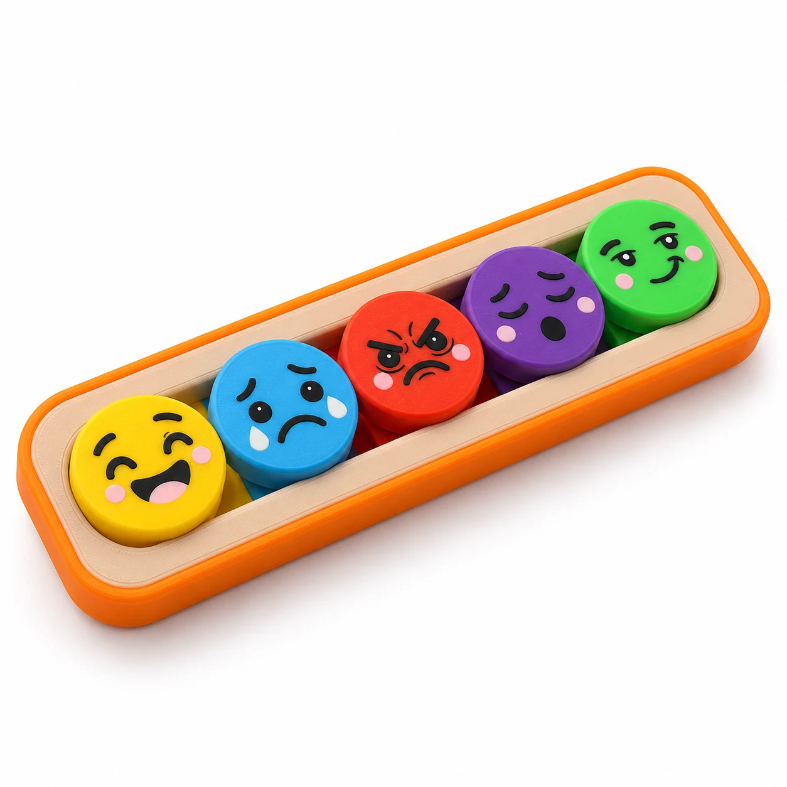

Langsung ke produk
Beranda / English Course
✳ TEACHING TOOLS · ENGLISH COURSE
Materi bisa sama.Pengalaman belajar .
Wujudkan ide mengajar menjadi alat yang bisa disentuh dan dimainkan. Jelajahi teaching tools TIGO LAB untuk kegiatan belajar bahasa Inggris di kelas.
Temukan teaching tools ↓
KOLEKSI ENGLISH COURSE 01 / Emotion Slider
● FEELINGS & EXPRESSIONS
Geser ekspresinya. Mulai ceritanya.
VOCABULARY & CONVERSATION
Emotion Slider.
“How do you feel today?”
Kenalkan kosakata perasaan melalui lima wajah warna-warni. Ajak anak memilih dan menggeser ekspresi, lalu mengungkapkan perasaannya dalam bahasa Inggris.
Mengenal ekspresi Latihan kosakata Percakapan sederhana
▶ Lihat animasi cara bermainHarga akan diinformasikan.
IDE AKTIVITAS BERSAMA PENGAJAR
Geser. Sebutkan.Ceritakan. Satu pertanyaan kecil bisa membuka percakapan di kelas.
01 Pilih ekspresinya Ajak anak melihat wajah pada slider, lalu memilih ekspresi untuk memulai kegiatan.
02 Sebutkan perasaannya Kenalkan kata seperti happy, sad, atau angry . Ajak anak menirukan pengucapannya.
03 Mulai percakapan Gunakan pertanyaan “How do you feel today?” dan bantu anak menjawab “I feel happy.”
×
ENGLISH COURSE / FEELINGS
Emotion Slider Media geser dengan lima wajah ekspresi berwarna. Gunakan sebagai alat bantu untuk mengenalkan kosakata perasaan dan memulai percakapan sederhana dalam bahasa Inggris.
▶ Lihat animasi cara bermain
Fokus aktivitas Kosakata perasaan & percakapan
Cara berinteraksi Pilih dan geser ekspresi
Harga Akan diinformasikan Pengajar dapat menyesuaikan pertanyaan dan kegiatan dengan level belajar anak.
Lihat ide aktivitas ↓
×
EMOTION SLIDER · CARA BERMAIN 3D
Geser ekspresi, ceritakan perasaan.
Pilih wajah pada slider, geser mengikuti jalurnya, lalu berlatih menyebutkan perasaan dalam bahasa Inggris.
Browser ini belum mendukung video. Buka animasi Emotion Slider .
Video belum bisa diputar. Buka atau unduh videonya .